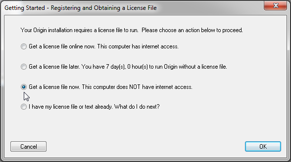

バージョン2016以前のライセンスファイル版
Single-User-Node-Locked-Old-Lic
次のシリアル番号はライセンスファイル版です:
xFxxx-9xxx-70/71/72xxxxx、または
xFxxx-6xxx-70/71/72xxxxx
シリアル番号が、
xxxxx-2xxx-79xxxxx, または
xxxxx-3xxx-79xxxxx,
ネットワーク同時起動版ですので、このページの情報は関係ありません。
ライセンスファイル版は、Originを一人のコンピュータにインストールできます。OriginLabのウェブサイトから、このコンピュータにライセンス(メインのライセンス) を取得する必要があり、このライセンスはコンピュータを指定します。メンテナンス期間中は、メインPC以外のライセンスをノートPCや自宅用PCなどに取得できます。このライセンスは、メンテナンス期間中に利用でき、メンテナンス期間を更新している限り、継続して使うことができます。
Originのライセンスのあるコンピュータを交換したい場合は、新しいコンピュータにライセンスを移行する前に、「ライセンスの取り外し」をする必要があります。
/Alert_icon.png) |
これらのライセンス案内はバージョン2016以前に対するものです。ライセンスのシステムはバージョン2017から更新されました。Origin2017以降のバージョンをご利用頂いている場合は、こちらのページをご覧ください。
|
ライセンスファイル版のアクティべーション
重要事項
- マルチシートライセンスで処理を行う場合、必ず管理者権限でコンピュータにログインしてください。
- Windows 10, 8.1, 8, 7 およびVistaでOriginを管理者として実行するには、Originのプログラムアイコンを右クリックして、「管理者として実行」を選びます。
- 一度処理が終わるとライセンスはコンピュータに保存されるので、それ以降はインターネット接続は必要ありません。
コンピュータがインターネットに接続されている場合
/Video_Image_2016.png) ビデオチュートリアル - インターネット接続があるコンピュータでライセンスを取得
ビデオチュートリアル - インターネット接続があるコンピュータでライセンスを取得
- Originを起動します。ダイアログが開き、ライセンスを取得する方法がいくつか選択できるようになっています。
- 一番目の選択肢、このコンピュータはインターネットに接続されており、オンラインでライセンスファイルをただ今、取得しますを選択します。OKをクリックします。
- コンピュータ情報ダイアログが開きます。ここに表示されるコンピュータ情報はOriginLabのWEBサイトに反映されます。OKをクリックします。
- ウェブブラウザが開き、OriginLabのWEBサイトにログインする画面が表示されます。既にWebメンバーシップを持っている場合はログインします。必要な場合はアカウントを作成してください。
- ログイン後、「メインPCライセンス」か「メインPC以外のライセンス」かを選択します。メンテナンス期間が切れたとき、メインPC以外のライセンスは使用できなくなります。進むをクリックします。
- ライセンスファイルが作成され、WEBページ上に表示されます。ライセンステキストを全てコピーします。
- Originに戻り、ライセンス入力ダイアログにライセンステキストを貼り付けたら、OKをクリックします。
コンピュータがインターネットに接続されていない場合
ビデオチュートリアル - インターネット接続がないコンピュータでライセンスを取得
実際にOriginを使用するコンピュータがインターネットに接続されていない場合でも、インターネットに接続できる別のコンピュータは必ず必要になります。このインターネット接続のあるコンピュータで、ライセンスを取得します。処理を行うには、インターネット接続がないコンピュータのコンピュータID、許可コード、シリアル番号が必須です。
- Originを起動します。ダイアログが開き、ライセンスを取得する方法がいくつか選択できるようになっています。
- 3番目のオプションライセンスファイルを今すぐ取得このコンピュータはインターネットに接続していませんを選択し、OKをクリックします。
- 
- ダイアログが開き、シリアル番号、コンピュータ名、コンピュータID、許可コードを表示します。メモ帳エディタに出力をクリックして、これらの情報をテキストファイルに保存します。
- インターネットに接続されているコンピュータに移動します。Webブラウザでwww.originlab.comを開きます。
- サポートメニューの下にあるサービス：「Originのライセンス/登録」リンクをクリックします。既にWebメンバーシップを持っている場合はログインします。必要な場合はアカウントを作成してください。
- 初めて登録またはライセンス認証をする場合、ログイン後にオプションOriginを登録してライセンスファイルを取得するを選択して、次にをクリックします。シリアル番号とバージョンを入力して次に進むをクリックします。
以前、Originに登録したり、ライセンスを取得している場合、登録済みのOrigin製品を表示します。
- 新しいシリアル番号のライセンスを取得、新しいシリアル番号を登録ボタン、Originを登録してライセンスファイルを取得するオプションを選択して、次にをクリックします。シリアル番号とバージョンを入力して次に進むをクリックします。
- ライセンス一覧に表示されていない新バージョンのライセンスを取得するには、新しいシリアル番号を登録ボタンをクリックして、Originを登録してライセンスファイルを取得するオプションを選択して、次にをクリックします。シリアル番号とバージョンを入力して次に進むをクリックします。
- 既にライセンス一覧に表示されているシリアル番号とバージョンを取得するには、一覧で（そのバージョンの）シリアル番号リンクをクリックします。「ライセンス要求履歴」のページが開いたら、表の上にある新しいコンピュータ用のライセンスを取得するボタンをクリックします。
- OriginのコンピュータID、コンピュータ名、アクセスコードを入力し、登録をクリックします。
- 「メインPCのライセンス」か「メインPC以外のライセンス」かを選択します。メンテナンス期間が切れると、メインPC以外のライセンスは使用できなくなりますので、ご注意ください。
- ライセンスファイルが作成され、WEBページ上に表示されます。ライセンステキストを全てコピーします。
- メモ帳等のテキストエディタを開き、ライセンステキストを貼り付けます。テキストファイルをフラッシュドライブやディスクに保存します。
- Originをインストールしたコンピュータに戻ります。コンピュータの詳細がライセンスダイアログに表示されている場合、戻るボタンをクリックして、メインのライセンスダイアログに戻ります。メインのライセンスダイアログで、すでにライセンスファイルを取得済みを選択します。次に何をすればいいのですか？を選択し、OKをクリックします。
- ライセンス入力ダイアログに、ライセンステキストを貼り付けたら、OKをクリックします。
関連項目
よくある質問
ライセンスファイル版のライセンスの取り外し
ライセンシングが成功した後、プロダクトキーはWeb上で「Used」と表記され、他のコンピュータでは利用出来なくなります。
Originのライセンスを別のコンピュータに移したい場合は、元のコンピュータからライセンスを取り外して新しいコンピュータにライセンスを入れる必要があります。元のコンピュータにアクセスできない場合は、OriginlLabのWebページから、システムの移行リクエストを行ってください。
Originをコンピュータで、まだ実行できる場合：
ライセンスの取り外し-ビデオチュートリアルをご覧ください。
コンピュータがインターネットに接続されている場合
- 管理者権限を持つアカウントでWindowsにログインする
- Originのアイコンの上で右クリックして、「管理者として実行」を選択して、管理者としてOriginを起動します。
- ヘルプ：ライセンスの取り外しを選択します。
- ステップ1でオンライン処理を選択して、今すぐ接続をクリックします。
- OriginLabのウェブサイトが開きます。ログインしてライセンス除去コード (DC)をクリックします。
- DCをコピーして、Originにあるステップ2でDCを貼り付けます。
- Originのライセンス除去ボタンをクリックします。これでコンピュータからOriginが取り外されました。OriginLabウェブサイトに情報が送られ、新しいライセンスファイルが届きます。
コンピュータがインターネットに接続されていない場合
- Originを起動します（Windows Vista、Windows7では、Originのプログラムアイコンを右クリックして、「管理者として実行」を選び起動します）。
- メインメニューのヘルプをクリックし、ライセンスの取り外しを選択します。
- ステップ1でオフライン処理を選択します。
- インターネットにつながったコンピュータで、http://www.originlab.com/reginfoに行き、ログインします。
- ライセンスのあるコンピュータを見つけて、削除しているシリアルナンバーをクリックします。
- ライセンスを取り外し、または、ライセンスを移行リンクをクリックすると、ライセンス除去コード(DC)が発行されます。
- DCをメモして、インターネットに接続していないコンピュータに戻ります。DCをOriginに入力すると、ライセンス取り外し認証番号 (DCN)が発行されます。
- DCNをメモして、ライセンスの取り外しのウェブページに戻ります。このページのステップ3に戻り、DCNを入力します。
完了のメッセージが出たら、ライセンスが再利用のために発行されます。OriginLabのWebページでDCNを入力しないと、ライセンスは発行されません。
Originをコンピュータで実行できない場合：
OriginlLabのWebページで、システムの移行リクエストを行う必要があります。
- http://www.originlab.com/reginfo に移動して、ログインしてください。
- ライセンスのあるコンピュータを見つけて、削除しているシリアルナンバーをクリックします。
- 「ライセンスを取り外し」または「ライセンスを移行」のリンクをどちらかクリックします。
- ステップ3のNoteで、システム移行の送信フォームリンクをクリックして、フォームを送信してください。
よくある質問
メンテナンス更新後、ライセンスファイル版のライセンスをアップデート
メンテナンスが更新されたら、以下のようにして新しいFLEXnetサーバーライセンスを取得してください。
- 管理者権限のあるアカウントでコンピュータにログインします。
- Originのアイコンを右クリックし、「管理者として実行」を選択してOriginを起動します。
- ヘルプ：バージョン情報を選択します。
- バージョン情報ダイアログで、ライセンスボタンをクリックします。
- ライセンス状態ダイアログで、ライセンスボタンをクリックします。
- ダイアログが開くので、以前にOriginをアクティベートした時と同じ要領でライセンスファイルを取得します。
- OriginLabのWEBサイトに表示されたライセンスファイルをコピーしたら、ライセンス入力ダイアログに貼り付け、処理を完了させます。ヘルプ：バージョン情報を選択し、メンテナンス期間がアップデートされたことを確認してください。
| Note:
メンテナンス期間中は、Originを常に最新の状態にアップデートすることをお勧めします。
|